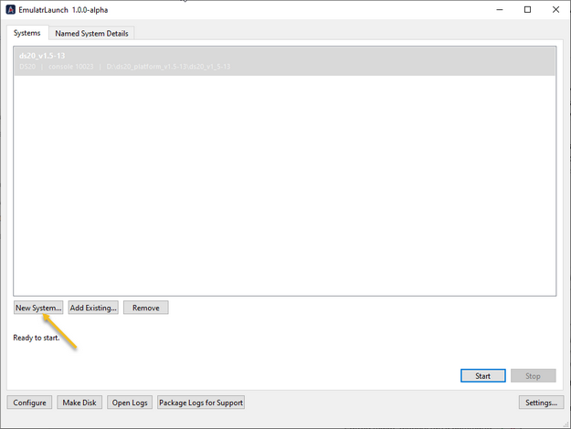
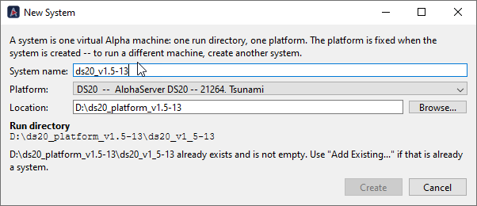

|
<< Click to Display Table of Contents >> Navigation: 4. Operating EmulatR > 4.1 Configuring & Running > Configuring a System with the Launcher |
This topic walks through configuring an emulated machine from a fresh installation to a booted guest. Work through the steps in order; each one builds on the last.
The product is EmulatR. The launcher (EmulatrLaunch.exe) and the Platform Editor (editors\platedit_qt.exe) are subsystems of it.
The installation lives at C:\Program Files\eNVy Systems, Inc\ASA-EmulatR and is read-only. A kit upgrade replaces it wholesale, so nothing you customize is ever stored there.
A named system is the launcher's unit of configuration: one platform (bound at creation) plus one profile directory, also called the run directory. The profile directory holds everything that system owns -- Emulatr.ini, the system's own copy of the platform manifest, firmware\, disks\, logs\ and traces\.
The launcher's catalog of systems lives in the per-user registry hive HKEY_CURRENT_USER\Software\eNVy Systems\EmulatR, where every launcher key carries a launch_ prefix. The registry is the CATALOG, not the substance: it stores names, pointers and small per-system knobs, while everything load-bearing lives in the profile directory on disk. That split is why both survive a kit uninstall and reinstall, and why a lost hive costs you nothing but the re-registration.
Run the installer, uninstalling any existing kit first, then start EmulatrLaunch.exe from the installation directory. No console window or shell is involved: the launcher starts the emulator directly as a child process with an explicit working directory and environment.
On the Systems tab, choose New System... and supply:

•Name -- any display name, unique ignoring case.
•Platform -- DS10, DS20 or ES40. This is immutable after creation.
•Profile (run) directory -- anywhere you own, for example under Documents. Locations under Program Files are REFUSED: Windows silently redirects writes there and the emulator's flash state would be lost.

On OK the launcher builds the profile:
created |
purpose |
|---|---|
Emulatr.ini |
seeded from a template with the model and console port filled in |
firmware\ |
where your SRM image goes, with a readme; firmware is never shipped |
disks\ |
default resolution root for relative disk-image names |
logs\, traces\ |
run output |
<stem>_platform.json |
this system's OWN copy of the platform manifest, copied from the installation and made writable |
The manifest copy at creation is the key design point: the profile is self-contained from birth. Editing the manifest affects only this system, and kit upgrades never touch it. Systems created by older launcher builds are seeded on their first Open in PlatEd instead.
EmulatR does not distribute firmware, for licensing reasons. Copy your firmware image -- for example ds20_v7_3.exe -- into the profile's firmware\ folder. Back in the launcher, the Details tab's Firmware -> Image control lists every file it finds there; pick one. A platform-mismatched image is flagged as a warning, never refused.
The selection is written to Emulatr.ini, and the image's basename -- the stem -- names the manifest the system uses: ds20_v7_3.exe selects ds20_v7_3_platform.json.
Details tab -> Devices -> Open in PlatEd opens this system's manifest copy. The note under the button shows the exact path and confirms it is (system-local). The manifest declares the PCI devices and, under each storage controller, the disk and CD rows. On a DS20 the rows that matter to a first boot are:
•pka_53c810 (the NCR SCSI HBA): SCSI id 0 becomes console device dka0, id 1 becomes dka100, and so on. Each row's media names its backing image file.
•cypress_ide: the ATAPI CD, dqa1. Its media names an ISO; empty means no disc.
One rule, two cases:
•An ABSOLUTE path (D:/Disks/dka0.vdisk) is used as-is. This is the simplest way to attach a disk you already have.
•A RELATIVE path (Alpha/dka0.vdisk) resolves against [Storage] diskDir in the profile's Emulatr.ini. New profiles are seeded with diskDir = disks, so that example means <profile>\disks\Alpha\dka0.vdisk.
If a row's file does not exist at launch, the emulator leaves that unit empty -- the SRM then reports device dka0 is invalid when you try to boot it -- and writes a Storage: ... not attached line to the mirror log naming the exact path it tried. That log line is the first place to look when a disk is missing.
New blank disks come from the launcher's Make Disk tool, whose drive geometries are read from the installation's verified disk_types.json, or from tools\mkdisk.py for scripted provisioning.
All of these live on the Details tab, persist per system, and take effect at the next Start.
control |
choices |
effect |
|---|---|---|
Emulator binary |
Discovered (recommended) / Release / RelWithDebInfo / Debug / Custom |
which Emulatr.exe this system launches. Discovered finds the installed one. |
Snapshots |
Safety net (default) / Diagnostic / Off |
machine-state snapshot cadence. Safety net saves rarely (50B cycles); Diagnostic saves densely (1B cycles) and each save pauses the guest. |
Execution mode |
ISP (default) / Silicon |
ISP is the firmware's pre-silicon simulator path and boots to the SRM prompt. Silicon is the faithful real-hardware path -- experimental, and does not yet reach the console. |
Console -> Port |
TCP port, defaulted per system |
the telnet console port. Open Console connects a terminal, using PuTTY if one is found. |
Runtime environment variables |
per-variable Enable plus value |
see Step 6 |
The environment panel lists exactly what the SELECTED emulator binary declares -- each binary carries its own registry of variable names beside it. The installed release binary declares NONE, because the diagnostic layer is compiled out of release builds, and the panel says so rather than offering knobs that would do nothing. Pinning the system to a RelWithDebInfo or Debug binary lights up the full curated registry of 130-plus variables with descriptions.
An unchecked variable is ABSENT from the child environment, not merely empty. Quarantined variables are stripped even when they are set in your own shell.
Start launches Emulatr.exe directly, with no shell: the working directory is the profile, the firmware comes from the Image selection, and the environment is composed from the knob overlays plus the variables you checked. When the profile owns a manifest copy, the launch points the emulator at it explicitly, so the installed defaults are never consulted.
Every run writes a mirror log to <profile>\logs\run_launch_*.log, headed by the effective diagnostic environment for that run.
Open Console connects to 127.0.0.1:<port>. At the P00>>> prompt, verify the configuration took -- show dev should list the disks you configured in Step 4 -- then boot with b dka0.
Stop requests a clean shutdown by writing a stop sentinel into the profile; the emulator exits after persisting its state. If it has not exited after ten seconds the launcher OFFERS escalation -- it never kills on its own. A forced kill loses unpersisted flash state, and is logged as such.
event |
registry catalog |
profile directories |
|---|---|---|
Launcher restart |
kept |
kept |
Kit uninstall, reinstall or upgrade |
kept -- HKCU is not touched |
kept, including customized manifests |
Registry hive deleted |
lost -- but Add Existing... re-registers any profile directory |
kept |
Profile directory deleted |
stale entry flagged broken by preflight |
lost -- it IS the system |
Because a profile directory is self-contained, the recovery story is simple: point Add Existing... at the directory and the system is back.
symptom |
cause |
fix |
|---|---|---|
device dka0 is invalid at the SRM prompt |
the storage row's media file was not found |
check the Storage: line in the mirror log, then fix the row's media -- an absolute path is simplest -- or put the file where diskDir plus the relative path points |
Devices note says (installed default ...) |
the profile predates manifest seeding |
click Open in PlatEd once; it copies the manifest into the profile |
Environment panel says there are no variables |
a release binary is selected |
expected by design -- pin a RelWithDebInfo or Debug binary for diagnostics |
memtest: No such command, net: No such command, keyboard notice during boot |
normal ISP-path console chatter |
none needed |
New System refused under Program Files |
deliberate guard against write redirection |
choose a directory you own |
See Also.